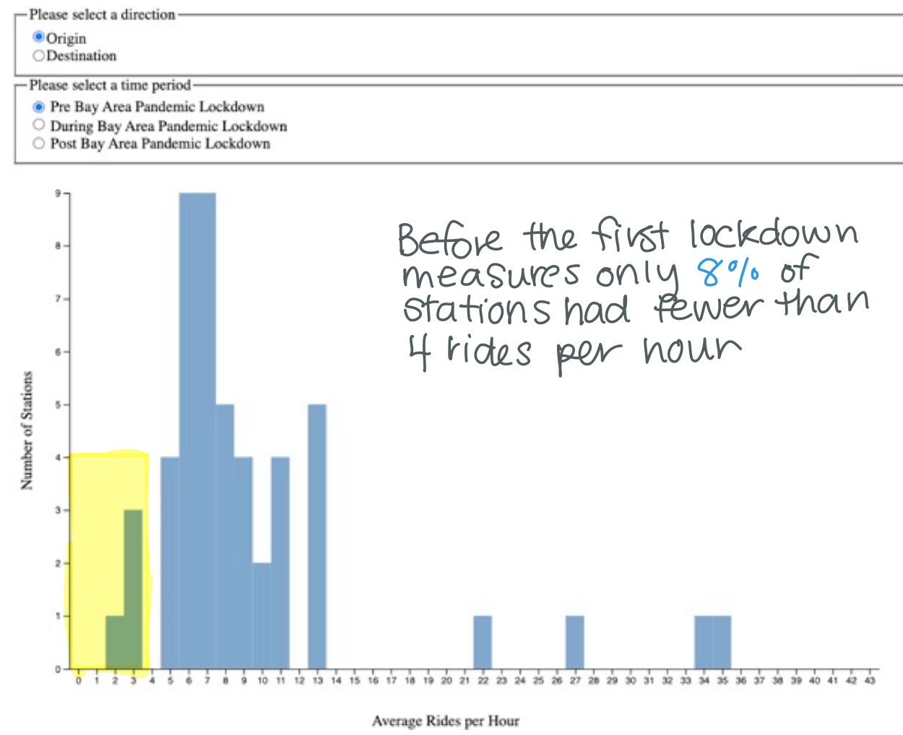
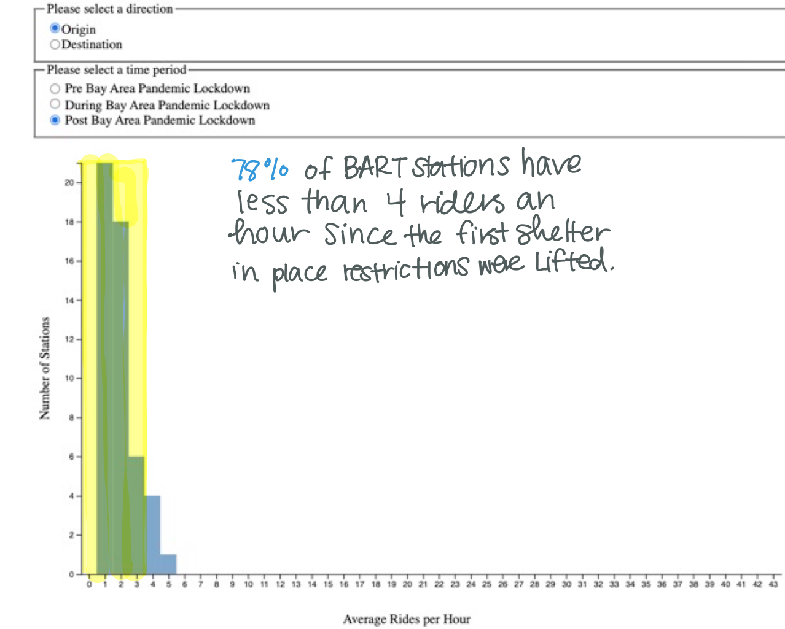

BART Hourly Average Ridership Histogram
Please select a direction
Origin
Destination
Please select a time period
Pre Bay Area Pandemic Lockdown
During Bay Area Pandemic Lockdown
Post Bay Area Pandemic Lockdown
Findings
Prior to the Lockdown Measures, BART station had a wide range of average hourly ridership

After the lockdown measures, the majority of stations have less than an average of 4 riders per hour
